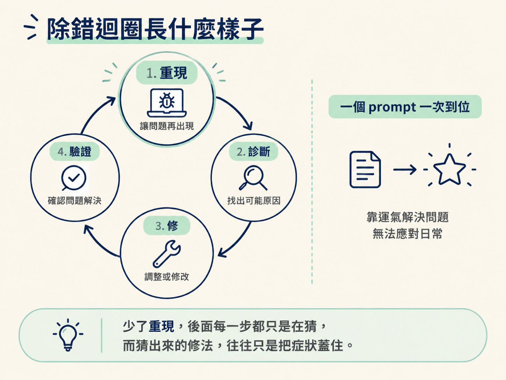
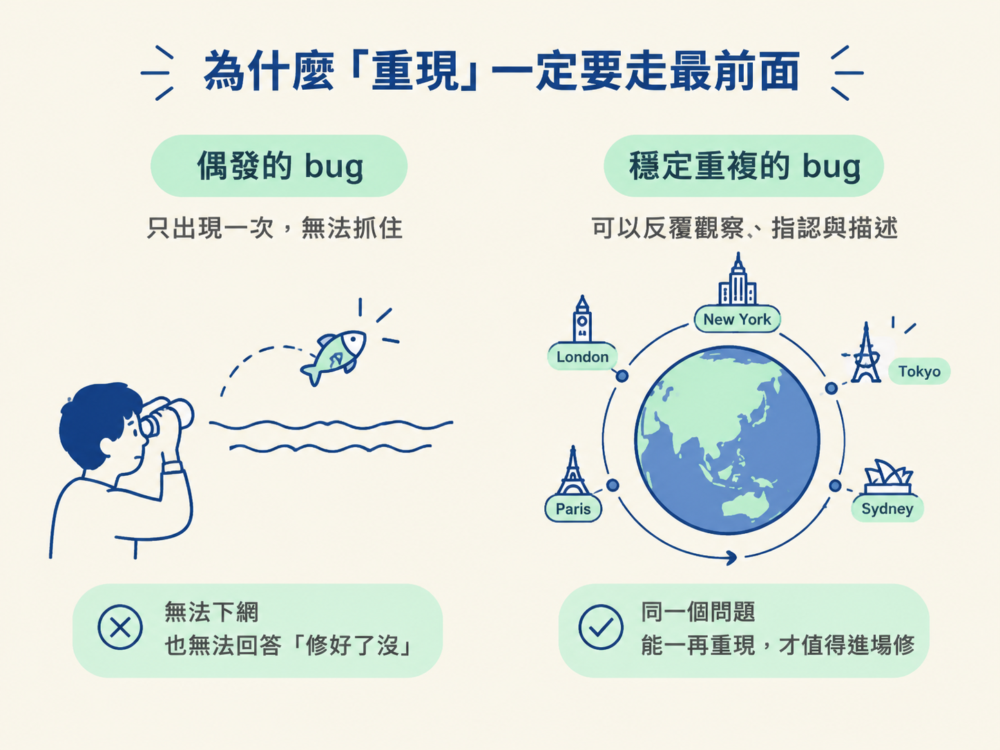

能說出為什麼「重現→診斷→修→驗證」才是 Codex 的預設工作流，以及為什麼「重現」必須走在最前面。
你有沒有過這種經驗：東西壞了，你趕快截一張圖丟給 Codex，打上「這個壞了，幫我修」，然後期待它一次搞定。
送出之後你盯著它跑。它改了幾個地方，畫面卻還是壞的。於是你又補一句「還是不對」，它再改一次，結果把另一邊也弄壞了。來回三四輪，你開始懷疑是不是模型不夠強。
其實問題多半不在模型，而在你跳過了一個關鍵動作。除錯迴圈才是幾乎每一次和 Codex 一起開發時都該用的東西。而它的第一步不是「修」，是「重現」。這一節先把這個迴圈的形狀講清楚，後面三節再一層一層拆開：它憑什麼能自己診斷、你實際要怎麼跑、以及什麼時候該踩煞車自己介入。
除錯迴圈不是一次性的 prompt，而是一個會繞回來好幾次的圈。骨架只有四步：
你可以把它想成看醫生。醫生不會你一說「頭痛」就直接開藥。他會先問「什麼時候開始痛、痛多久、會不會反覆發生」，那是在重現並確認症狀。接著才做檢查找病因。確定病因，才開對應的藥。最後還要你回診，看是不是真的好了。
少了重現那一步，後面每一步都是在猜。而猜出來的修法，往往只是把症狀蓋住。

在工作坊或示範影片裡，你會看到一種很爽的節奏：丟一個 prompt，東西就生出來，只要輕微迭代一下就收工。講者自己也很常做這種示範，因為她就是做 demo 的。但她特別提醒：那不是真實世界裡大部分人的工作流，除非你整天都只在做 demo。
真實專案幾乎一定會不斷冒出問題。所以「一次到位」比較像是幸運，除錯迴圈才是日常。把這件事放在心裡，你就不會因為一次 prompt 沒做對，就懷疑自己用錯工具。
迴圈的第一步，是辨認並重現問題。這裡有個很容易被忽略的判斷：如果一個現象你只看過一次，它可能根本重現不出來，也許只是曇花一現的偶發狀況。
這就像抓一條只跳過一次的魚。你連牠在哪片水域都不知道，要怎麼下網？對一個抓不住的東西猛修，你甚至無法回答最基本的那一句：「修好了沒？」
所以要先確認它是穩定重複的。講者的示範就是這樣：她切到一個保留著真實 bug 的分支，捲動頁面，親眼看到 Tokyo 的物件和其他城市行為不一樣：其他城市會繞一圈回到前面，Tokyo 卻一直躲在球後面。這個現象能一再重現，才值得進場修。

重現之後還有一個動作：把你看見的東西用語音或文字說出來、指出來。描述得越具體，Codex 越早知道該往哪個方向找。但它不是只能靠你的描述，它其實會自己用工具去重現、去檢查。這正是它能把後面三步接手的原因。
讓你可以放心放手的一個關鍵特性是：Codex 很少在東西真的壞掉時說「完成了」。它通常會自然地先跑一次 build 再回報，這是它被訓練出來的行為。也就是說，它宣稱修好的時候，至少已經通過了一道基本的自我檢查。
另一個重要的心態轉換是：Codex 不是只能拿來做全新的 prototype。它更適合用在一個已經存在、已經有 bug 的專案上，用手上的工具把問題查出來、修掉。你不必先有一個乾淨的新專案，才配使用它。
除錯迴圈（重現、診斷、修、驗證）才是和 Codex 一起開發時的預設工作流，「一個 prompt 一次到位」只是示範時的例外。重現必須走在最前面，因為抓不住的偶發現象不值得修；重現之後，把看到的講清楚，再讓 Codex 接手診斷與修復，而它會先跑一次 build 才敢說自己完成了。
看到這裡，你可以先記住一件事：下次東西壞掉，別急著貼圖求修，先讓問題再發生一次。這個動作做滿，後面三步才站得住腳。
既然它可以自己診斷，那它到底是「看到」了什麼，才有辦法查？下一節就要打開它的工具箱，看 browser use、CDP、截圖和 computer use 這四種感官各自能讓它看見什麼。